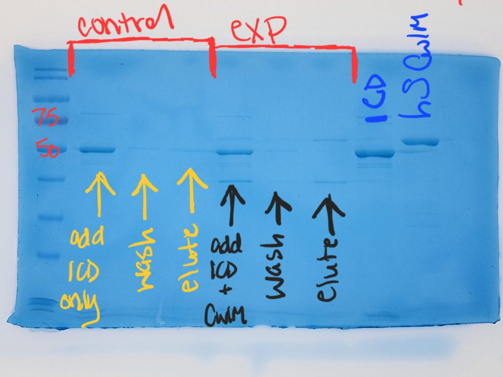
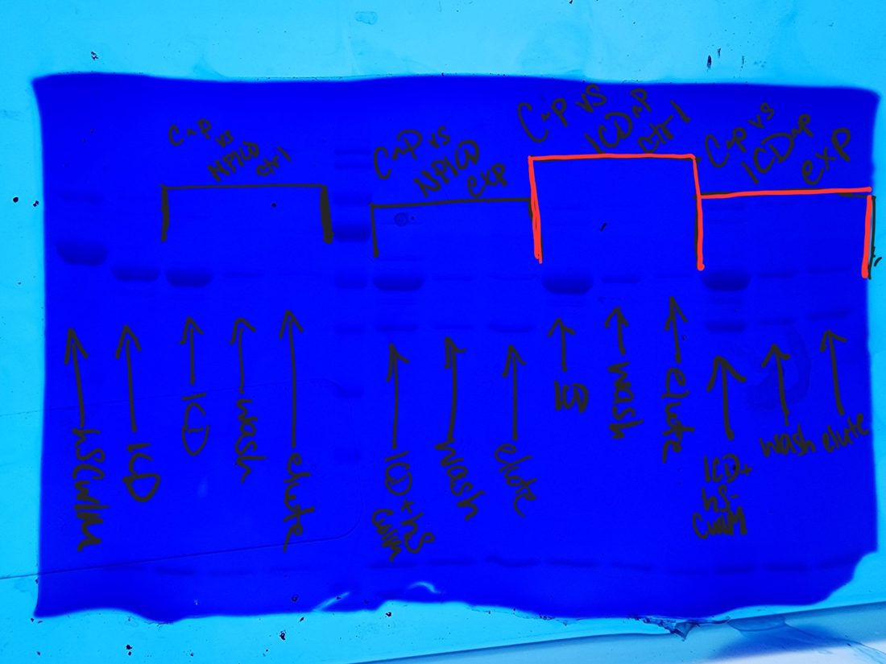

Test inductions for recombinant protein expression (E. coli)
Find conditions (temperature, time, IPTG, buffer) that give soluble protein, with normalized pre/post-induction, supernatant and pellet samples.
Purpose
Identify induction conditions that produce a soluble protein of interest. Vary one variable at a time: temperature, induction time, IPTG concentration, lysis buffer, or medium.
Procedure
- Inoculate 10 mL LB (+ antibiotic, e.g. ampicillin 140 µg/mL) with the transformant (expression strain such as BL21). Grow overnight.
- Next morning, take the OD₆₀₀. Inoculate 220 mL LB + antibiotic in a 250 mL flask to a starting OD of 0.1–0.25.
- Shake at 37 °C. Check the OD every 30–45 min and stop at OD₆₀₀ ~1–1.2.
- Pre-induction sample. Standardize to OD 5:
$$\text{culture to take} = \frac{\text{desired OD}}{\text{current OD}} \times \text{final volume}$$
Example: culture at OD 1.0, final volume 100 µL: (5 / 1.0) × 100 µL = 500 µL. Spin 16,000 × g for 1 min, discard supernatant, resuspend in 100 µL 1× PBS, add 20 µL warmed 6× Laemmli, mix. Label “pre-induction”.
- Split into four flasks of ~50 mL.
- Induce with IPTG (usually 0.3–1.5 mM; 1 mM is the default; stock typically 500 mM). Volume = (final mM ÷ stock mM) × culture volume. Example: 0.8 mM in 55 mL = (0.8/500) × 55 mL = 88 µL.
- Incubate at different temperatures (e.g. 20, 25, 37 °C) for 4 h. Lower temperatures usually give less protein but more of it soluble, and need longer induction. Some strains (e.g. cold-adapted chaperone strains) are only for very low temperatures.
- Dilute each culture 1:9 (100 µL + 900 µL LB) to read OD accurately (the spectrophotometer is not linear above ~1), multiply by 10.
- Make a normalized post-induction sample for each condition as in step 4 (e.g. OD 4.2: (5/4.2) × 100 = 119 µL). Label tubes with the condition before adding anything.
- Spin the remaining culture 20 min at 4 °C (4,000 rpm, Eppendorf Centrifuge 5810 R); discard supernatant; freeze the pellet at –20 °C.
Lysis
- Resuspend each pellet in 25–30 mL buffer without imidazole, plus 1 mM DTT (example: 50 mM Tris pH 7.9, 150 mM NaCl, 10% glycerol). Most proteins are more soluble near neutral pH and ~150 mM NaCl; glycerol can help but may affect downstream assays.
- Lyse on ice (high-pressure homogenizer, French press or sonication; see your institution’s equipment training). Cool the centrifuge to 4 °C beforehand.
- Spin the lysate to separate soluble (supernatant) from insoluble (pellet) fractions.
Supernatant and pellet samples
- Supernatant: normalize by the OD of the culture that the lysate came from (adjust for the volume of buffer used) so that equal cell equivalents are loaded. Example: OD 4.2 culture in 25 mL → (5/4.2) × 100 µL = 119 µL supernatant (concentrate by spinning, or use directly), made up to 100 µL with water, plus 20 µL 6× Laemmli.
- Pellet: resuspend in 5 mL 5 M urea to unfold the protein (pipette, vortex, or warm at 56 °C), then bring to the same volume as the supernatant with water or PBS. Make 100 µL samples the same way. For real purifications the soluble protein is in the supernatant and the pellet is only a diagnostic.
Gel
Load pre-induction, then post-induction, supernatant and pellet lanes for each condition (about 10–12 µL each; ~5 µL ladder). Run a Tris-glycine SDS-PAGE gel at constant current, 30 mA for the first 15 min, then ~42 mA until the dye reaches the bottom. Stain with Coomassie (30 s in a microwave inside a closed box, then 30 min to 3 h at RT with gentle shaking, destain for 1 h to O/N at RT, and photograph using light box or geldoc.
Compare the band at the expected size between supernatant and pellet at each condition.


Lysis by French press (variant)
A second, narrative version of this protocol used a French press for lysis:
- Resuspend cell pellets in ~25 mL of 50 mM Tris pH 7.9 (try different buffers; most proteins are soluble near neutral pH and ~150 mM NaCl) and keep on ice.
- Grease the gasket on the plunger, head piece and screw with vacuum grease. Put the plunger in the cell, invert it in the stand, pour in the suspension, leave the screw open so air can escape, fit the head piece while holding the plunger up, then close the screw fully.
- Turn the cell right-side up in the press, set the dial to high, and start the pump with a collection tube under the outlet. Watch the pressure; you want it to reach ~1000 psi before much suspension has flowed out.
- When dripping stops, turn the pump off, switch to medium while still collecting, open the screw to drain the rest, then lower the plunger.
- Pass the cells through a second time if the pressure did not build or the suspension is not clear.
- Clean thoroughly: rinse so water runs through all holes in the head piece, then wipe and dry.
- Balance in Oakridge tubes (to within about a tenth of a gram, in pairs) and spin 20,000 rpm, 20 min, 4 °C. Convert to ×g for your rotor.
Worked example for loading: if the lysate is concentrated 2× relative to the induction culture (resuspended in half the volume), double each OD to estimate its OD-equivalent, then adjust: a sample at OD-equivalent 4.2 needs 5/4.2 × 10 µL ≈ 12 µL instead of 10 µL on the gel (maximum ~15 µL per lane).
protein expressionIPTGtest inductionsolubilitySDS-PAGE